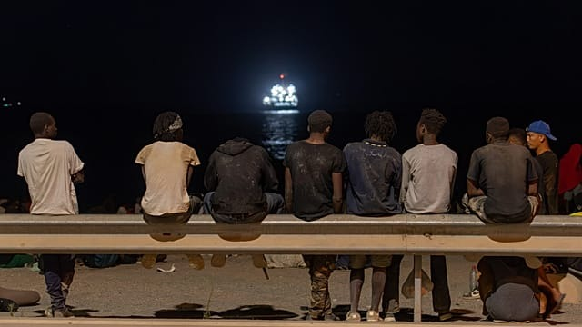

GEOPOLITICS
Ceuta : le Maroc renforce sa surveillance frontalière
Après la découverte de 28 migrants dans des logements insalubres à Ceuta, le Maroc muscle son dispositif policier aux frontières des enclaves espagnoles.